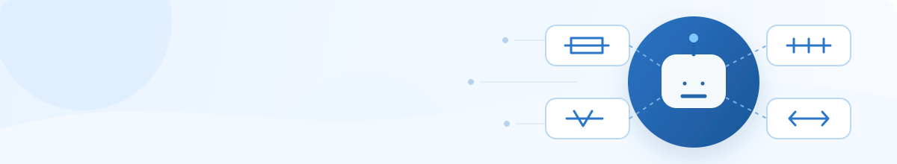
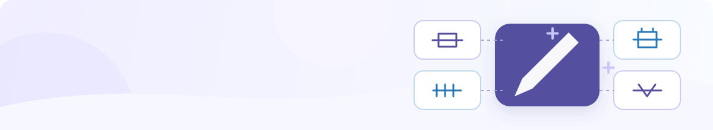

@选择智能体，/选择连接器
补充生成要素系统已完成意图识别，请逐项确认选择字段
1/1
可选择常用选项，也可手动填写

12 个智能体支持在会话中快捷发起；5 个复杂智能体使用独立工作台。点击卡片即可按已选默认模板进入对应处理方式。

安全连接文档、协同办公、项目管理和数据服务等业务系统。点击即可带入对话，创建文档、查询业务数据或发起业务操作。

将检索、校验、整理和分析等能力封装为标准技能，可组合调用并一键带入对话，让复杂任务更快完成。
| 文档名称 | 来源 | 字数 | 创建时间 | 操作 |
|---|
集中维护平台能力、强制规则和起草模板。